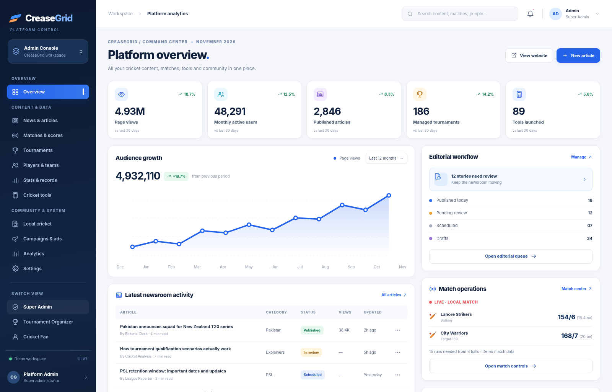
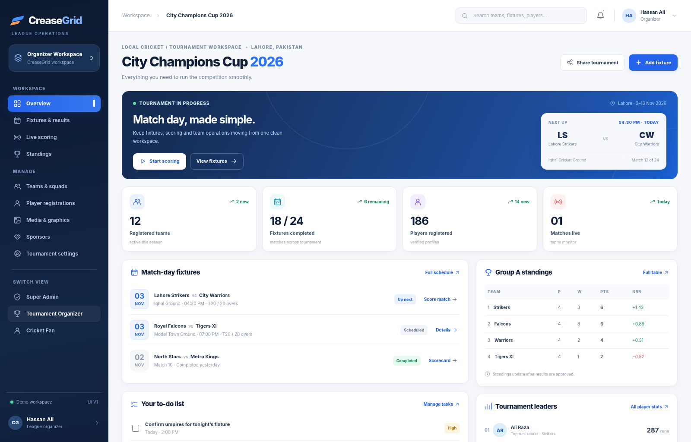
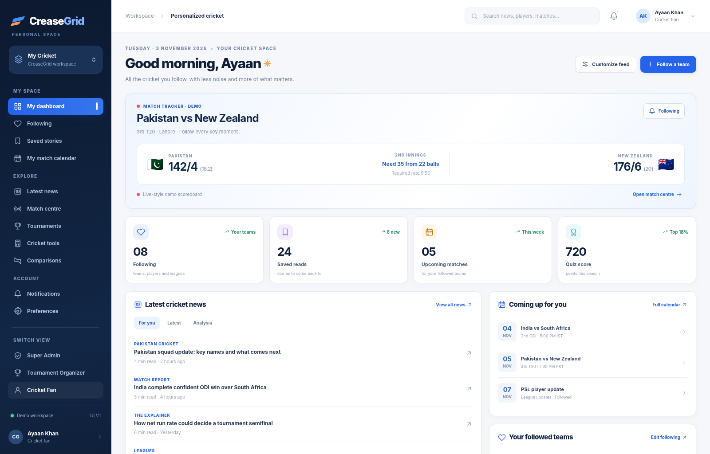

Explore three independently designed dashboards in an airy white-and-navy design system. Each one has a dedicated desktop experience and responsive mobile navigation.

Editorial workflow, platform analytics, matches, tools and operations.
Open dashboard →
Fixture management, live-scoring shortcuts, standings and team operations.
Open dashboard →
Personalized scores, text-first latest news, followed teams and quick tools.
Open dashboard →